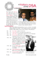
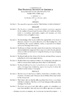

Who We Are
The Dozenal Society of America is a voluntary nonprofit educational corporation, organized for the conduct of research and education of the public in the use of base twelve in calculations, mathematics, weights and measures, and other branches of pure and applied science.
To learn a little more about how we got where we are, read about The History of the DSA. You can also get our membership form to join the DSA, or fill out the electronic form.

Reflections on the DSGB
Prof. Gene Zirkel
Some reflections on the Dozenal Society of Great Britain.
11E5
db4a113.pdf
